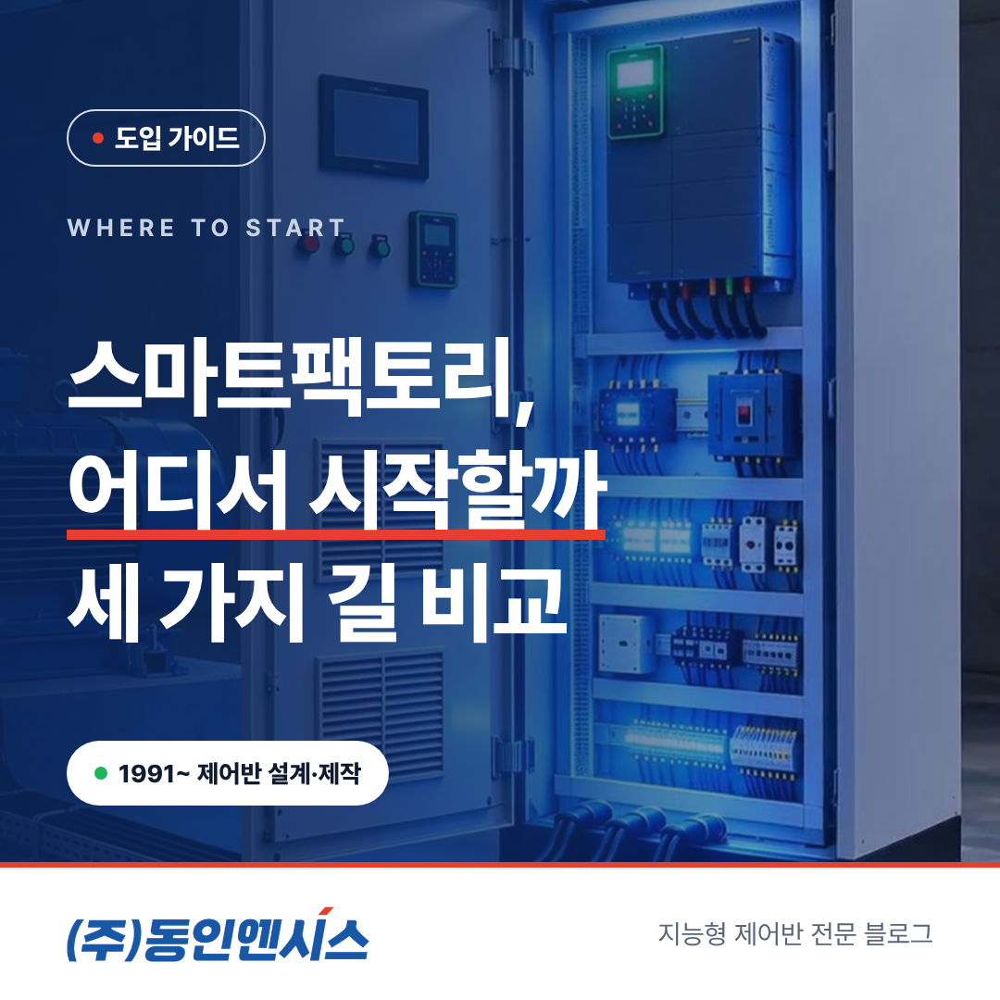
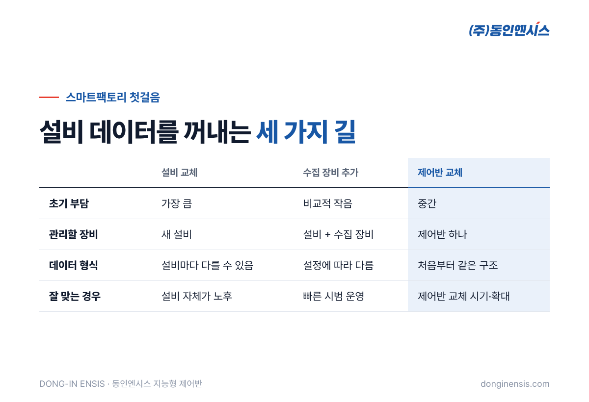
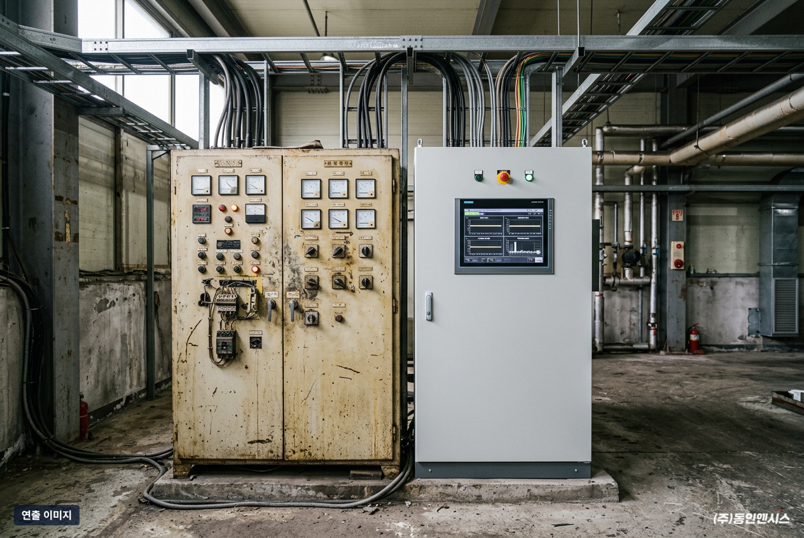
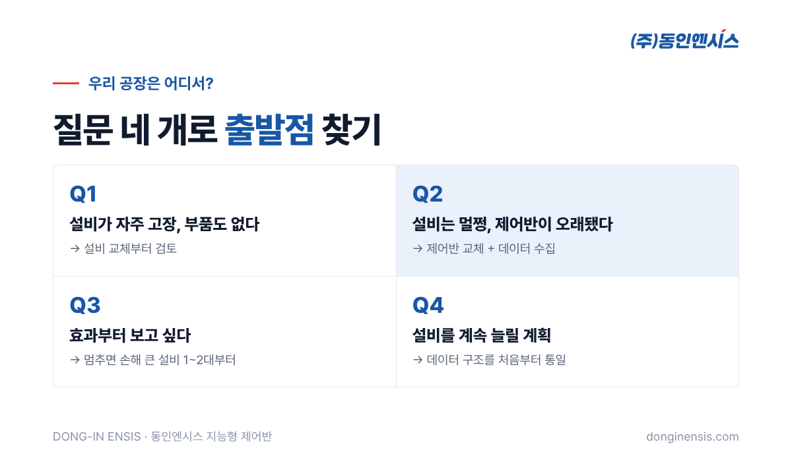

스마트팩토리를 해 보자는 이야기가 나오면 공장마다 비슷한 고민이 시작됩니다. 설비를 새것으로 바꿔야 하나, 데이터 모으는 장비를 따로 달아야 하나, 아니면 다른 방법이 있나. 이 글에서는 부산에서 35년째 제어반을 설계·제작해 온 동인엔시스가 스마트팩토리 구축의 첫걸음을 세 가지 방식으로 나눠 장단점을 비교해 봤습니다. 우리 공장에 어떤 출발점이 맞는지 가늠하는 데 참고가 되면 좋겠습니다.
화면이 멋진 생산관리 시스템도, AI 분석도 결국 현장 설비에서 들어오는 값을 먹고 움직입니다. 모터가 몇 도인지, 전류가 얼마나 흐르는지, 설비가 언제 섰는지 같은 기본 데이터가 없으면 그 위에 무엇을 올려도 제 역할을 하지 못합니다.
그래서 스마트팩토리 구축을 시작할 때 가장 먼저 정해야 할 질문은 "무슨 시스템을 살까"가 아니라 "설비 데이터를 어디서, 어떻게 꺼낼까"입니다. 이 질문에 대한 답이 크게 세 갈래로 나뉩니다.
어떤 방법이 더 낫다고 단정하기보다, 각각 어떤 공장에 잘 맞는지 살펴보겠습니다.

데이터 기능이 들어간 최신 설비로 바꾸는 방법입니다. 새 설비는 처음부터 통신 기능을 갖춘 경우가 많아 데이터를 받기가 비교적 수월합니다.
다만 비용과 시간이 가장 많이 듭니다. 멀쩡히 잘 돌아가는 펌프나 송풍기, 압축기까지 바꾸게 되는 경우가 생기고, 설치하는 동안 생산을 멈춰야 할 수도 있습니다. 설비가 워낙 낡아 어차피 교체할 시기라면 좋은 선택이지만, 데이터만을 위해 설비를 바꾸기에는 부담이 큽니다.
설비와 제어반은 그대로 두고, 센서와 데이터 수집 장비(게이트웨이)를 덧붙이는 방법입니다. 초기 비용이 상대적으로 적고 빨리 시작할 수 있다는 장점이 있습니다.
대신 관리할 장비가 하나 더 늘어납니다. 제어반과 수집 장비를 서로 다른 곳에서 맡으면, 데이터가 끊겼을 때 어디서 문제가 생겼는지 찾기가 어려워집니다. 현장마다 PLC 기종과 통신 방식이 달라 연결 작업을 매번 새로 해야 하는 것도 부담입니다. 설비가 늘어날수록 이 장비들을 하나하나 챙기는 일이 커집니다.
설비는 그대로 두고, 설비를 움직이는 제어반만 교체하거나 새로 설치하는 방법입니다. 동인엔시스 지능형 제어반은 설비를 제어하면서 운전 데이터도 함께 모으고, 별도 수집 장비 없이 클라우드나 회사 내부 서버로 보냅니다.
현장에 들어가는 장비는 제어반 한 면입니다. 제어와 데이터를 한 곳에서 맡기 때문에 문제가 생겨도 확인할 곳이 하나뿐이고, 데이터 형식도 처음부터 같은 구조로 정리해 내보냅니다. 오래된 제어반을 바꿀 시기가 다가온 공장이라면, 교체하는 김에 스마트팩토리의 출발점까지 함께 마련하는 셈입니다.
이미 다른 회사 PLC가 잘 돌고 있어 제어반을 당장 바꾸기 어려운 설비라면, 기존 PLC의 값을 읽어 오는 방식으로 함께 묶을 수도 있습니다. 이때도 기존 PLC 프로그램은 건드리지 않고 읽기만 합니다.

제어반 교체 방식을 고르면, 설비가 돌 때마다 기록이 쌓이기 시작합니다. 모터 권선과 베어링 온도, 회전속도, 전압·전류·전력량, 진동, 주변 온습도, 운전과 정지 상태가 하루 종일 남습니다.
이 기록이 쌓이면 일하는 방식이 조금씩 달라집니다. 아침에 출근해서 밤사이 설비가 어땠는지 화면 하나로 확인할 수 있고, 같은 종류의 설비끼리 비교해 유난히 뜨겁거나 많이 흔들리는 녀석을 먼저 찾아낼 수 있습니다. 정해 둔 기준을 넘으면 알람이 오니, 사람이 매번 돌지 않아도 이상이 생긴 설비부터 살펴볼 수 있습니다.
무엇보다 숙련자의 감과 경험에 기대던 판단을 기록으로 남길 수 있다는 점이 큽니다. 담당자가 바뀌어도 그 설비가 지난 몇 달 동안 어떻게 움직였는지 그대로 볼 수 있으니까요. 생산관리 시스템이나 AI 분석을 나중에 붙일 때도 이 기록이 바탕이 됩니다.
| 비교 항목 | 설비 교체 | 수집 장비 추가 | 제어반 교체 |
|---|---|---|---|
| 초기 부담 | 가장 큼 | 비교적 작음 | 중간 |
| 생산 중단 | 길 수 있음 | 짧음 | 제어반 교체 기간 |
| 관리할 장비 | 새 설비 | 설비 + 수집 장비 | 제어반 하나 |
| 데이터 형식 | 설비마다 다를 수 있음 | 장비 설정에 따라 다름 | 처음부터 같은 구조 |
| 잘 맞는 경우 | 설비 자체가 노후 | 빠른 시범 운영 | 제어반 교체 시기, 여러 설비 확대 |
어느 방법이 정답이라기보다, 공장 상황에 따라 맞는 출발점이 다릅니다. 실제로는 한 공장 안에서 설비마다 다른 방법을 섞어 쓰는 경우도 많습니다.
아래 질문에 답해 보면 출발점이 좀 더 분명해집니다.

Photorealistic wide photo of a mid-sized Korean factory production hall with blue electric motors driving fans and pumps along one side, pipes and ducts overhead, a production line in the background, clean floor with yellow walkway lines, bright daylight from skylights, no people in focus, no brand logos, no readable text. 3:2 landscape.
Q. 제어반 교체 기간 동안 생산을 오래 멈춰야 하나요? 제어반은 공장에서 미리 만들고 시험까지 마친 뒤 현장에 들어가기 때문에, 현장 교체 작업은 그만큼 짧아집니다. 정확한 일정은 현장 분석 후 생산 계획에 맞춰 잡습니다.
Q. 비용은 어느 쪽이 가장 적게 드나요? 설비 수와 모터 용량, 모을 항목, 통신 환경에 따라 달라서 일괄적으로 말씀드리기 어렵습니다. 현장을 보고 세 가지 방법을 함께 견줘 드립니다.
Q. 구축에는 얼마나 걸리나요? 보통 9주에서 15주 사이입니다. 현장을 보는 데 1주, 제어반을 짓는 데 5주 정도가 들고, 서버 준비와 시운전 기간은 현장마다 조금씩 다릅니다.
Q. 이미 수집 장비를 달아 둔 설비도 있는데요? 그 설비는 그대로 두고, 앞으로 제어반을 바꾸는 설비부터 지능형으로 바꾸는 식으로 함께 운영할 수 있습니다. 데이터를 한곳에서 볼 수 있게 묶는 방법도 현장 분석 때 같이 검토합니다.
스마트팩토리 구축은 큰 시스템을 들이는 일이 아니라, 설비 데이터를 어디서 꺼낼지 정하는 일에서 시작합니다. 설비를 바꿀지, 장비를 붙일지, 제어반을 바꿀지는 공장마다 답이 다릅니다.
동인엔시스는 750건이 넘는 프로젝트에서 펌프·송풍기·압축기·컨베이어 같은 설비의 제어반을 직접 만들어 왔습니다. 우리 공장에 맞는 출발점이 궁금하시면 홈페이지에서 적용 가능성 진단을 신청해 주세요.
제조 상담 051-862-3668 · dongin@donginmne.com
아래 질문 중 하나에 실제 경험으로 답해 본문 적당한 곳에 넣어 주세요. 사람이 직접 쓴 문장이 들어가면 네이버에서 저품질 위험이 줄고 노출에 도움이 됩니다.